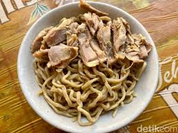

HOME
Bakmie Ayam Karet

Description
Growing up on the west side of jakarta made me appreciate the abundance of good Bakmie stalls and restaurant, especially when you like them as much as i do. Here's a recipe to one of my favorite Bakmie.
Ingredients
The Noodle
- 300 Gram of rubber noodles
- Water enough to boil noodles
The Chicken
- A generous amount of water
- 250 Gram chicken breast
- 1 teaspoon whole black pepper
- 3 Cloves garlic, chopped
- 1/2 clove onion, chopped
- 3 Stalks spring onions, thinly sliced
Stir Fried Chicken Toppings
- 1 clove garlic, chopped
- 1 tablespoon soy sauce
- 1 tablespoon sesame oil
- 1 tablespoon oyster sauce
- 1 teaspoon salt
- 1 teaspoon pepper
- Sufficient cooking oil
Noodle Seasoning
- Chicken oil to taste (1 tbsp per bowl)
- Soy sauce to taste (1 tbsp per bowl)
- Oyster sauce to taste (1 tsp per bowl)
- White pepper to taste (1 tsp per bowl)